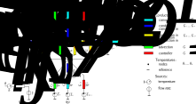
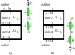

Sensible thermal load in steady-state#

The sensible thermal load is the heat flow rate that must to be added to a space by the heating, ventilation and air-conditioning (HVAC) system in order to maintain the air temperature at its setpoint value.
Problem#
Data#
A building is formed of 4 rooms with the dimensions (Figure 1):
\(L = 6, \, l = 3\, \mathrm{m}\), lengths,
\(H = 3 \, \mathrm{m}\), height.
\(w = 0.20 \, \mathrm{m}\), width of the walls.
Figure 1. Plan of the building
The thermal conductivity of the walls is \(\lambda = 1.7 \, \mathrm{W/(m \, K)}\).
The convective heat coefficients between the walls and the indoor and outdoor air are \(h_i = 8 \, \mathrm{W/(m^2 \, K)}\) and \(h_o = 25 \, \mathrm{W/(m^2 \, K)}\) respectively.
The short-wave solar radiation absorbed by each wall is \(E = 200 \, \mathrm{W/m^2}\).
The outdoor temperature is \(T_o = 0 \, \mathrm{°C}\).
Questions#
Let’s consider that all four rooms are controlled by a HVAC system at the setpoint temperatures 20 °C, 20 °C, 22 °C, 18 °C for rooms 1, 2, 3, and 4, respectively and that there is no solar radiation on the walls. Find the thermal loads of the four rooms.
From now on, let’s consider that there is solar radiation absorbed by the walls and that rooms 1 and 3 are controlled by a HVAC system while rooms 2 and 4 are in “free-running”. Find the thermal loads of rooms 1 and 3 and the temperatures of the indoor air of rooms 2 and 4.
Room 2 in ventilated with an air-flow rate of \(ACH = 1 \, \mathrm{volume /hour}\) (ACH is the number of air-changes per hour). The density and specific heat of the air are \(\rho = 1.2 \, \mathrm{kg/m^3}\) and \(c = 1000 \, \mathrm{J/(kg \, K)}\), respectively. The outdoor air enters in room 2, then is moves to room 4 and, from here, it gets outdoors. Find the thermal loads of rooms 1 and 3 and the temperatures of the indoor air of rooms 2 and 4.
The air-flow in room 2 is reversed: from outdoors, the air enters in room 4, then it moves to room 2, from which it gets outdoors. Considering that the air flow rate of room 2 is the same as before (i.e., \(ACH = 1 \, \mathrm{volume /hour}\)), find the thermal loads of rooms 1 and 3 and the temperatures of the indoor air of rooms 2 and 4.
import numpy as np
np.set_printoptions(precision=1)
# Data
# ====
# dimensions
L, l, H, w = 6, 3, 3, 0.20 # m
# thermo-physical propertites
λ = 1.7 # W/(m K) wall thermal conductivity
ρ, c = 1.2, 1000 # kg/m3, J/(kg K) density, specific heat air
hi, ho = 8, 25 # W/(m2 K) convection coefficients in, out
# short-wave solar radiation absorbed by each wall
E = 200 # W/m2
# outdoor temperature
To = 0 # °C
# ventilation rate (air-changes per hour)
ACH = 1 # volume/h
Thermal model#
The volumetric flow rate of air circulating in room 2 results from the ventilation rate:
The mass flow rate of air entering and getting out of room 2 is:
V_dot = L * l * H * ACH / 3600 # volumetric air flow rate
m_dot = ρ * V_dot # mass air flow rate
Thermal conductances#
In the model, we will consider the conductances:
\(h \, S\) - convection, W/K;
\(\lambda / w \, S\) - conduction, W/K;
\(\dot m c\) - advection, W/K;
\(K_p\) - gain of the proportional controller, W/K.
Note: in determening the surface area of the walls \(S = L·l·H\) the length of the walls are the indoor values.
We will consider the conductances of exterior and the interior walls (Figure 2). The exterior walls are modelled with a conductance for outdoor convection (cyan in Figure 2) and an equivalent conductance for conduction in the wall and indoor convection (blue in Figure 2). The indoor walls are modelled by an equivalent conductance for indoor convection, conduction, and indoor convection on the other side.
Figure 2. Walls forming thermal coductances in the model.
Thermal network#
The thermal network modeling the building is a weighted directed graph (Figure 3). It is composed of edges (or branches) and vertexes (or nodes).
The temperature nodes model a volume, a surface, a line or a point in space for which the temperature is considered homogenous. The nodes are dependent temperatures (outputs of the physical system). The reference temperature is considered zero Celsius; it has a known value and is represented by a bar (Figure 3).
To a temperature node \(\theta_j\), there are connected heat flow rate branches \(q_k, k = 0 ... n\) and heat flow rate sources, \(f_j\) (Figure 3a). A heat rate source delivers a heat flow rate whatever is the temperature difference. In buildings, typical heat flow rate sources are solar irradiance, electrical appliances and occupants. If a heat flow rate source is identically zero, then it is not figured on the graph.
In steady-state, the algebraic sum of the heat flow rates entering the temperature node \(\theta_j\) is zero:
Two temperature nodes \(\theta_i\) and \(\theta_j\) are connected by directed edges of heat flow rates \(q_k\) (Figure 3a). On each edge, there is a conductance \(G_k\) and a temperature source \(b_k\). A temperature source maintains a temperature value whatever is the heat flow rate. In building, outdoor air, ground, and setpoint temperatures are typical examples of temperature sources. If a temperature source is identically zero, then it is not figured on the graph.
From the directed sum of temperature differences over a branch, it results that the temperature drop over a conductance is (Figure 3a):
The relation between the temperature drop, \(e_k\), over a conductance, \(G_k\), and the heat flow rate, \(q_k\), thrrough the conductance \(G_k\) is:
This weighted directed graph is characterized by:
\(A\) - incidence matrix;
\(G\) - conductance diagonal matrix;
\(b\) - vector of temperature sources;
\(f\) - vector of flow-rate sources.
The solution of the problem is (Ghiaus (2013)):
and

Figure 3. Thermal network: a) typical element of the thermal network (the sources are not figured if they are identically zero); b) thermal network model for the buiding shown in Figures 1 and 2.
For our model, the graph has 20 braches and 8 nodes (Figure 3b).
nq, nθ = 20, 8 # number of flow-rates branches and of temperaure nodes
Incidence matrix#
The incidence matrix of a directed graph shows the relationship between the edges (or branches) \(k\) and the vertexes (or nodes) \(j\) of the graph (Figure 3a):
The incidence matrix is a sparce matrix which has:
the number of rows equal to \(n_q\), the number of flow rates \(q_k\);
the number of columns equal to \(n_{\theta}\), the number of temperature nodes \(\theta_j\).
# Incidence matrix
# ================
A = np.zeros([nq, nθ])
# q0 ... q3 (cyan branches)
A[0, 0] = 1
A[1, 1] = 1
A[2, 5] = 1
A[3, 7] = 1
# q4 ... q7 (blue branches)
A[4, 0], A[4, 3] = -1, 1
A[5, 1], A[5, 2] = -1, 1
A[6, 4], A[6, 5] = -1, 1
A[7, 7], A[7, 6] = -1, 1
# q8 ... q12 (yellow branches)
A[8, 2], A[8, 3] = -1, 1
A[9, 3], A[9, 4] = -1, 1
A[10, 6], A[10, 2] = -1, 1
A[11, 6], A[11, 3] = -1, 1
A[12, 6], A[12, 4] = -1, 1
# q13 ... q15 (green branches)
A[13, 3] = 1
A[14, 3], A[14, 6] = -1, 1
A[15, 6] = 1
# q16 ... q19 (red branches)
A[16, 2] = 1
A[17, 3] = 1
A[18, 4] = 1
A[19, 6] = 1
Conductances#
The number of conductances correspod to the number of flows which is the number of rows of incidence matrix \(A\)
# Conductance matrix
# ==================
G = np.zeros(A.shape[0])
Exterior walls: outdoor convection#
The conductances of convection between the walls and the outdoor air (in cyan in Figures 2 and 3) are of the form
where \(S_{o,k}\) is the surface area of the wall in contact with the outdoor air:
\(S_{o,0} = L \, H\);
\(S_{o,1} = S_{o,2} = (L + l) H\);
\(S_{o,3} = (2l + 3L + 2w)H\).
# G0 ... G3 (cyan branches): outdoor convection
L4 = 2 * l + 3 * L + 2 * w # length outdoor wall room 4
So = np.array([L, L + l, L + l, L4]) * H # outdoor surfaces
G[0:4] = ho * So
Exterior walls: conduction and indoor convection#
The equivalent conductance for conduction in the wall and convection between the wall and the indoor air (in blue in Figure 3) is:
# G4 ... G7 (blue branches): conduction, indoor convection
G[4:8] = 1 / (w / λ + 1 / hi) * So
Interior walls: indoor convection, conduction indoor convection#
The equivalent conductance for the indoor walls is formed by the (yellow in Figures 2 and 3):
convetion between wall and indoor air;
conduction into the wall;
convetion between wall and indoor air.
It is of the form: $\(G_k = \frac{1}{\frac{1}{h_i} + \frac{w}{\lambda} + \frac{1}{h_i}}S_{i,j}, \text{ with } k = 8 ... 12, \text{ and } j = 0 ... 4\)$
where \(S_{i,j}\) is the surface area of the wall in contact with the indoor air:
\(S_{i,0} = S_{i,1} = l \, H\);
\(S_{i,2} = S_{i,3} = S_{i,4} = L \, H\).
# G8 ... G12 (yellow branches): indoor walls
# indoor convection, conduction, indoor convection
Si = np.array([l, l, L, L, L]) * H
G[8:13] = 1 / (1 / hi + w / λ + 1 / hi) * Si
Ventilation: heat transfer by advection#
Ventilation of rooms 2 and 4 transfers heat to these spaces by advection (Figure 4). The energy flow rate carried by the fluid is:
where:
\(\dot H\) is the enthalpy rate carried by the air, W;
\(\dot m\) - mass flow rate of the air, kg / s;
\(c\) - specific heat capacity of the air, J / (kg⋅K);
\(\theta\) - air temperature, °C.
Air-flow: outdoor → room 2 → room 4 → outdoor#
If the airflow is from outdoor to room 2, then the heat flow rate tranferred from outdoor air to the indoor air of room 2 is (Figure 4 a):
or
where \(G_{13} = \dot m c\).
The heat flow rate transferred by advection of the air from room 2 to room 4 is (Figure 4 a):
or
where \(G_{14} = \dot m c\).

Figure 4. Heat advection by ventilation. a) Air-flow: outdoor → room 2 → room 4 → outdoor. b) Air-flow: outdoor → room 4 → room 2 → outdoor.
Air-flow: outdoor → room 4 → room 2 → outdoor#
If the airflow is from room 4 to room 2 (Figure 4 b), then the heat flow rate tranferred to the indoor air of room 2 is:
or
where \(G_{14} = \dot m c\).
The heat flow rate transferred by advection from the outdoor air to room 4 is:
or
where \(G_{14} = \dot m c.\)
Heat flow rate from room 2 to room 4#
If the air flows from room 2 to room 4, then the heat flow rate is \(q_{14a} \equiv q_{14}.\) If the air flows from room 4 to room 2, then the heat flow rate is \(q_{14b} \equiv -q_{14}.\) Therefore, a single heat flow rate, \(q_{14}\), is needed in the thermal network (Figure 3).
Modelling the change in airflow direction#
If the air flows in the direction: outdoor → room 2 → room 4 → outdoor, then conductance \(G_{15}\) is zero and conductances \(G_{13}\) and \(G_{14}\) are equal to \(\dot m c\) (Figure 3 and Figure 4a).
If the air flows in the direction: outdoor → room 2 → room 4 → outdoor, then conductance \(G_{13}\) is zero and conductances \(G_{14}\) and \(G_{15}\) are equal to \(\dot m c\) (Figure 3 and Figure 4b).
If there is no ventilation, the conductances \(G_{13}\), \(G_{14},\) and \(G_{15}\) are zero.
# G13 ... G15 (green branches): advection by ventilation
G[13:16] = np.zeros(3)
Table 1. Typical values for the ventilation rates (in air changes per hour, ACH) as a function of the position of windows (H. Recknagel, E. Spenger, E_R Schramek (2013), Table 1.12.1-4)
Position of windows |
Ventilation rate, ACH [h⁻ⁱ] |
|---|---|
Window closed, doors closed |
0 to 0.5 |
Tilted window, venetian blind closed |
0.3 to 1.5 |
Tilted window, whitout venetian blind |
0.8 to 4.0 |
Window half opened |
5 to 10 |
Window fully open |
9 to 15 |
Window and French window fully open (cross ventilation) |
about 40 |
Proportional controller#
The heating, ventilation, and air conditioning (HVAC) system maintains the indoor air temperature at setpoint value. Therefore, the HVAC system may be modelled as a proportional controller (Figure 5a) for wich the heat flow rate of the HVAC system is:
where:
\(K_P\) is the proportional gain;
\(T_{sp}\) - setpoint temperature, °C;
\(\theta\) - measured temperature of the indoor air, °C.
The heat flow rate can be then expressed as (Figure 5b):
where \(G \equiv K_p\).
The indoor air temperature control by the HVAC system (Figure 5a) may be modelled by a source of temperature, \(T_{sp}\), and a conductance, \(G\) (Figure 5b).
Figure 5. Model of a proportional controller in a thermal network (example for room 1). a) Principle of a temperature control system using a P-controller. b) Model of temperature control system in a thermal network.
If the rooms are in “free-runnning” (i.e., the controllers are not active), the proportional gains of the controllers are zero.
# G16 ... G19 (red branches): gains of proportional controllers
G[16:20] = np.zeros(4)
Vector of temperature sources#
Every edge (or branch) of the graph has a temperature source which is not figured if it is identically zero (Figure 3a). The number of temperature sources is equal to the number of heat flow rates, i.e., the number of rows of the incidence matrix \(A\).
# Vector of temperature sources
# =============================
b = np.zeros(A.shape[0])
The temperature sources modelling the outdoor temperature of the walls are on branches 0 … 3.
b[0:4] = To # cyan branches: outdoor temperature for walls
The temperature sources modelling the outdoor temperature for the ventilation are on braches 13 and 15.
b[[13, 15]] = To # green branches: outdoor temperature for ventilation
The temperature sources modelling the setpoint temperatures are on the branches 16, … 19. The setpoints for room 1 and 3 are 20 °C and 22 °C, respectively.
b[[16, 18]] = 20, 22 # red branches: setpoints room 1 & 3
Vector of heat flow rate sources#
In our model, the heat flow rate sources are the solar radiation absorbed by the exterior walls. First, we will consider that the solar radiation is zero.
The number of heat flow rate sources is equal to the number of temperature nodes, i.e., the number of columns of the incidence matrix \(A\).
# Vector of flow-rate sources
# =============================
f = np.zeros(A.shape[1])
Outputs#
In this problem, we are looking for the indoor air temperatures of the rooms (1, 2, 3, and 4) and for the thermal loads of the rooms.
The air temperatures of the rooms are \(\theta_2\), \(\theta_3\), \(\theta_4\), and \(\theta_6\),
The thermal load is the heat flow rate needed to compensate all the other heat flow rates in order to maintain the air temperature at its setpoint. Therefore, the thermal loads are the heat flow rates of the controllers, i.e. \(q_{16 ... 19}\).
# Indexes of outputs
# ==================
indoor_air = [2, 3, 4, 6] # indoor air temperature nodes
controller = range(16, 20) # controller branches
Question 1: all 4 rooms are controlled#
Considering that all four rooms are controlled by a HVAC system at the setpoint temperatures 20 °C, 20 °C, 22 °C, 18 °C for rooms 1, 2, 3, and 4, respectively and that the there is no solar radiation on the external walls, find the thermal loads of the four rooms.
For an almost perfect proportional controller, we will consider a very large gain of the controller as compared to the maximum value of the conductance matrix.
print(f"Maximum value of conductance: {max(G):.0f} W/K")
Maximum value of conductance: 1830 W/K
b[controller] = 20, 20, 22, 18 # °C setpoint temperature of the rooms
G[controller] = 1e9 # P-controller gain
θ = np.linalg.inv(A.T @ np.diag(G) @ A) @ (A.T @ np.diag(G) @ b + f)
q = np.diag(G) @ (-A @ θ + b)
print("1. All 4 rooms controlled")
print("θ:", θ[indoor_air], "°C")
print("q:", q[controller], "W")
1. All 4 rooms controlled
θ: [20. 20. 22. 18.] °C
q: [2008.4 1322.6 2346.4 4270. ] W
Question 2: rooms 2 & 4 in free-running#
Let’s consider that:
there is solar radiation absorbed by the exterior walls, i.e. \(f_k = E \, S_{o,j}, \text{ with } k = 0, 1, 5, 7 \text{ and } j = 0...3;\)
as before, rooms 1 and 3 are controlled by a HVAC system, i.e. \(K_{P,j} \rightarrow \infty, \text{ with } j=16, 18;\)
rooms 2 and 4 are in “free-running”, i.e. \(K_{P,j} = 0, \text{ with } j=17, 19.\)
Find the thermal loads of rooms 1 and 3 and the temperatures of the indoor air of rooms 2 and 4.
# Zone 2 & 4 free-running; solar rad; without ventilation
G[[17, 19]] = 0 # controller gains for room 2 & 4
# Solar radiation
exterior_wall = [0, 1, 5, 7]
f[exterior_wall] = E * So
θ = np.linalg.inv(A.T @ np.diag(G) @ A) @ (A.T @ np.diag(G) @ b + f)
q = np.diag(G) @ (-A @ θ + b)
print("2. 2 & 4 free-run w/o ventilation")
print("θ:", θ[indoor_air], "°C")
print("q:", q[controller], "W")
2. 2 & 4 free-run w/o ventilation
θ: [20. 13.1 22. 11.7] °C
q: [1719.8 0. 2057.8 0. ] W
Question 3: ventilation from outdoor to room 2#
Room 2 in ventilated with an air flow rate of \(ACH\) (ACH is the number of air-changes per hour). The outdoor air enters in room 2, then it moves to room 4 and, from here, it gets outdoors.
Find the thermal loads of rooms 1 and 3 and the temperatures of the indoor air of rooms 2 and 4.
To model this direction of air flow, the conductances for ventilation are:
# Zone 2 & 4 free-running; solar rad;
# Ventilation outdoor -> room 2 -> room 4 -> outdoor
ventilation = range(13, 16)
G[ventilation] = m_dot * c, m_dot * c, 0
θ = np.linalg.inv(A.T @ np.diag(G) @ A) @ (A.T @ np.diag(G) @ b + f)
q = np.diag(G) @ (-A @ θ + b)
print("3. 2 & 4 free-run, ventilation out -> 2 -> 4 -> out")
print("θ:", θ[indoor_air], "°C")
print("q:", q[controller], "W")
3. 2 & 4 free-run, ventilation out -> 2 -> 4 -> out
θ: [20. 11.7 22. 11.6] °C
q: [1761.1 0. 2099. 0. ] W
Question 4: ventilation from room 4 to room 2#
The air flow in room 2 is reversed: from outdoors, the air enters in room 4, then is moves to room 2, from which it gets outdoors. The air flow rate of room 2 is the same as before.
Find the thermal loads of rooms 1 and 3 and the temperatures of the indoor air of rooms 2 and 4.
To model this direction of air flow, the conductances for ventilation are:
# Zone 2 & 4 free-running; solar rad;
# Ventilation outdoor -> room 4 -> room 2 -> outdoor
G[ventilation] = 0, m_dot * c, m_dot * c
θ = np.linalg.inv(A.T @ np.diag(G) @ A) @ (A.T @ np.diag(G) @ b + f)
q = np.diag(G) @ (-A @ θ + b)
print("4. 2 & 4 free-run, ventilation out -> 4 -> 2 -> out")
print("θ:", θ[indoor_air], "°C")
print("q:", q[controller], "W")
4. 2 & 4 free-run, ventilation out -> 4 -> 2 -> out
θ: [20. 12.8 22. 11.3] °C
q: [1750.5 0. 2088.4 0. ] W
References#
C. Ghiaus (2013) Causality issue in the heat balance method for calculating the design heating and cooling loads, Energy 50: 292-301, https://doi.org/10.1016/j.energy.2012.10.024, open access preprint: hal-03605823
H. Recknagel, E. Sprenger, E.-R. Schramek (2013) Génie climatique, 5e edition, Dunod, Paris. ISBN 978-2-10-070451-4